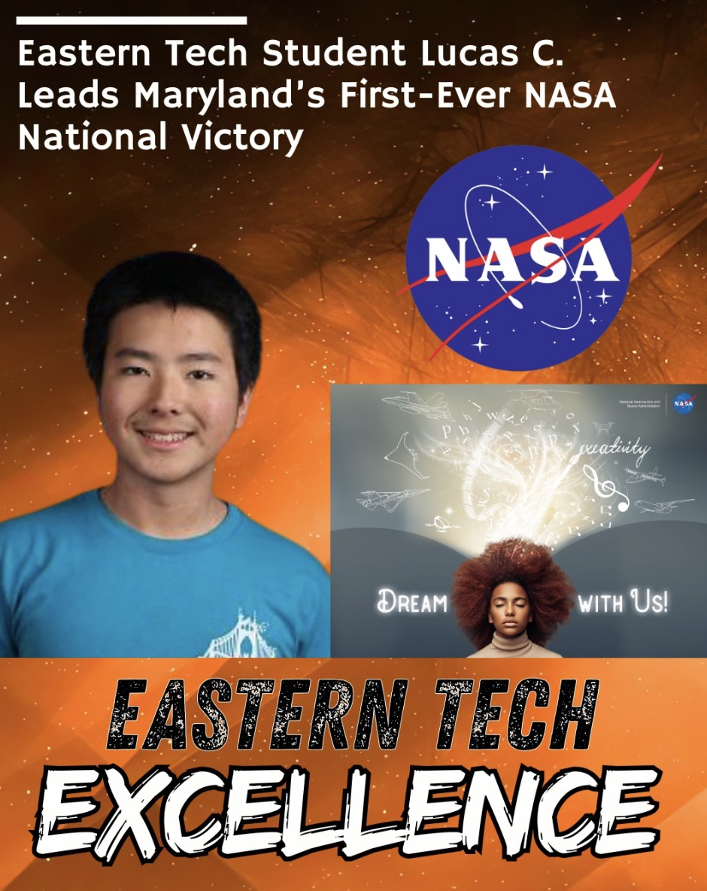
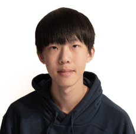

Find Real Problems
Use research and observation to choose problems worth solving.
Summer Course + Workshop
A hybrid academy for motivated rising 9th-12th grade students who want to research real problems, design solutions, present like engineers, and prepare for national STEM competitions.
Program Information
The Academy teaches a practical innovation process inspired by Team Galaxy's NASA Dream With Us Design Challenge journey: identify meaningful problems, research deeply, design solutions, build a business case, and communicate the work clearly.
Students do not need prior research or competition experience. The program is designed for curious, driven students who want to learn how engineers, entrepreneurs, and researchers turn ideas into projects that can compete and make an impact.
Use research and observation to choose problems worth solving.
Connect engineering, AI, entrepreneurship, and science into a workable concept.
Learn how Team Galaxy moved from an early concept to a NASA-recognized innovation project.
Present your project and leave with a personal innovation plan for the next year.

Our Story
Team Galaxy became Maryland's first team to earn a podium finish at NASA's Dream With Us Design Challenge. That achievement came from months of research, design, writing, formatting, and presentation work.
TG Academy of Innovation turns that experience into a student-friendly pathway. Participants study the same habits behind strong innovation projects, then apply them to their own ideas in a guided workshop setting.
Instructors
 Lead Instructor
Lead Instructor
Team Galaxy captain and NASA Dream With Us national podium finisher.
 Design + Modeling
Design + Modeling
Team Galaxy designer with VEX Robotics engineering experience.

AI + EngineeringNASA finalist and STEM workshop instructor focused on real-world solutions.
 Analysis + Applied Math
Analysis + Applied Math
Team Galaxy financial analyst with a strong physics and mathematics background.
Guest Speakers
Hear how aerospace teams collaborate, solve hard problems, and develop ideas inside a leading research organization.
Presentation mentor teaching students how to organize technical ideas and communicate confidently.
Advice on research, entrepreneurship, competitions, and choosing the right opportunity for a project.
Dates + Format
Meet the cohort, explore the innovation framework, and begin shaping project ideas.
Daily 10:00 AM-2:00 PM sessions with lessons, guest speakers, mentor feedback, and team work on a presentation about what students learned and their personal innovation plans.
Students present their innovation concepts and receive feedback using a NASA-inspired judging rubric.
Student Outcomes
Registration Open
Rising 9th-12th grade students are invited to apply. Questions can be sent to Dr. Frank Chen.
Open Registration Form